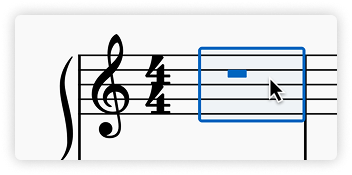
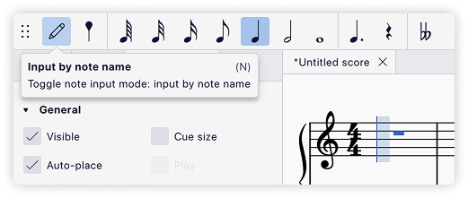
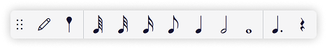
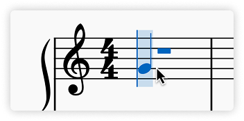
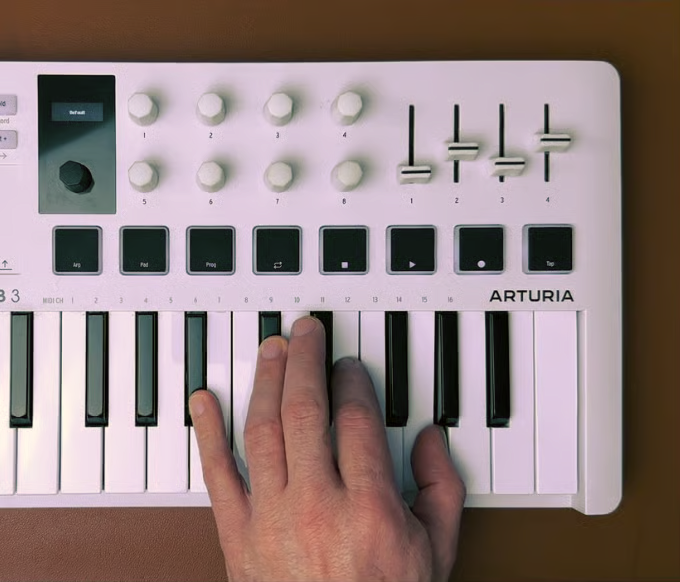
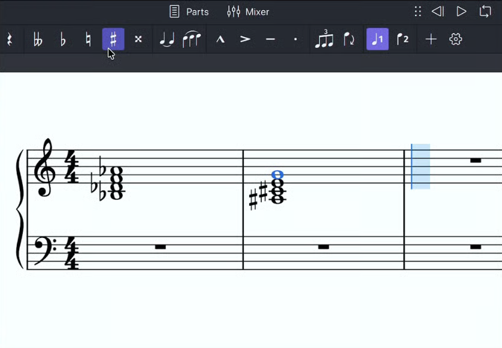
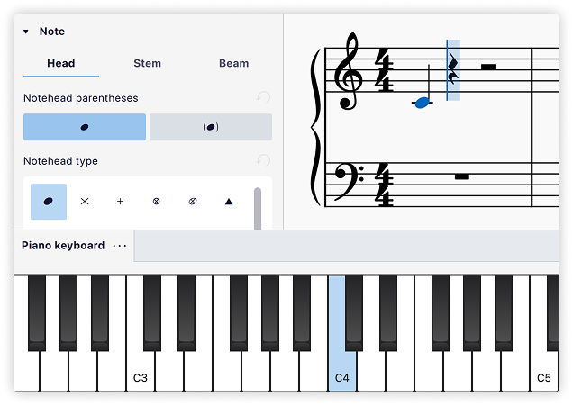
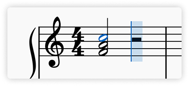

输入音符与休止符
MuseScore Studio 支持通过电脑键盘、鼠标、MIDI 键盘以及应用内的虚拟钢琴键盘输入音乐。
开始输入音符或休止符最简单的方法是：先在工具栏中选择一个时值，然后：
- 在谱表上单击以输入音符
- 键入一个音名（A–G）以输入音符
- 键入 0 以输入休止符
音符输入模式
本页介绍默认的音符输入模式，即 按音名输入。在此模式下，你先选择时值，再选择音高，从而把音符放入乐谱。
在 按时值输入模式 中，步骤相反：先选择音高，再选择时值，把音符放入乐谱。
更多输入模式见 其他音符输入方法。
输入音符
选择起始位置
要向乐谱添加音符或休止符，首先要选择开始输入的位置。你可以使用鼠标或 键盘导航命令。

进入音符输入模式
接下来，按 N 键或单击工具栏中的

如果你没有先选择起始位置，MuseScore 会把光标放在上次输入的位置，或其他合理的位置，因此请确保光标在你想要的位置。
按从左到右的顺序输入音符：先选择时值，再输入音高或休止符。当你在该位置完成音符输入并准备做其他事情时——例如在另一个位置输入音符、添加其他标记，或执行复制粘贴等其他操作——可以单击 按音名输入 按钮、再次按 N，或按 Esc 退出音符输入模式。
MuseScore Studio 几乎拥有无限的撤销历史，所以你不必担心犯错。只需单击工具栏最右侧的
选择时值
在音符输入模式下，通过以下方式为下一个要输入的音符选择时值：
- 单击 音符输入工具栏（位于乐谱窗口正上方）中对应的音符图标，或
- 键入与所需时值对应的键盘快捷键 1–9

这些键盘快捷键设计得高效且易于记忆。最常用的音符时值——八分音符、四分音符和二分音符——分别对应键 4、5 和 6（数字小键盘的中间一行）。更短的时值用更小的数字表示，更长的时值用更大的数字表示。完整列表如下：
其他时值，包括复附点和一百二十八分音符，可以通过 自定义工具栏 或 自定义键盘快捷键 来选择。
选择音高
选好时值后，使用电脑键盘、鼠标、MIDI 键盘或虚拟钢琴键盘输入音高。
输入音符后，使用 ↑ 或 ↓ 把它向上或向下移动半音。
使用电脑键盘选择音高
这通常是 MuseScore 中输入音符最高效的方式。
只需按下电脑键盘上与你要输入音高对应的字母键（A–G）。

这样输入的音符会替换光标位置已有的任何休止符或音符。要向现有音符或和弦添加音符，按住 Shift 的同时按新音符的字母键。更多信息见下文 和弦 一节。
按音名输入音符时，MuseScore 会选择与该谱表上一个音符最接近的八度。这对于主要以级进和小跳进为主的段落效果很好。如果需要为更大的跳进改变八度，使用 Ctrl+↑ 和 Ctrl+↓（Mac：Cmd+↑ 和 Cmd+↓）把上一个输入音符的音高升高或降低一个八度。
使用鼠标选择音高
要用鼠标输入音符，把鼠标放在谱表中想要的线或间上，然后单击。鼠标光标会显示你即将输入音符的预览，帮助你准确定位。

如果你正在输入新音符的位置已存在音符，单击会向和弦添加音符。要改为替换现有音符，在输入新音符时按住 Shift。
用这种方法输入离谱表很远的上方或下方音符可能比较困难，因为 MuseScore 可能把远离目标谱表的单击理解成试图向上方或下方谱表添加音符。此时可以尝试先输入低一个或高一个八度的音符，再用 Ctrl+↑ 和 Ctrl+↓（Mac：Cmd+↑ 和 Cmd+↓）把音高升高或降低一个八度。
注意：虽然通常按从左到右输入音符，但鼠标输入法允许你在任何已有音符或休止符可替换的位置输入音符。
使用 MIDI 键盘选择音高
如果你 连接了 MIDI 键盘，在音符输入模式下直接按相应琴键即可输入音符。
在 MIDI 键盘上弹奏音符时，只要在按下一个琴键之前完全松开上一个琴键，音符就会连续输入。同时按下多个 MIDI 琴键即可创建和弦。
通过 MIDI 键盘输入的、位于当前调号之外的音符会自动添加变音记号，但变音记号的记写方式可能并非你所想。
要影响音符或和弦的等音记写：
- 在音符输入工具栏中选择所需的变音记号。
- 在 MIDI 键盘上弹奏该音符或和弦。


要改变所选音符的等音记写，按 J。更多选项见 重新记写音高。
如果你预先在 偏好设置 → MIDI 映射 中设置好要用的琴键，就可以 使用 MIDI 键盘选择时值。
使用虚拟钢琴键盘选择音高
你也可以使用屏幕上的 钢琴键盘 面板输入音符。要显示它，使用 视图 → 钢琴键盘 或按快捷键 P。面板可以用同样方式关闭。

要输入音符，只需用鼠标单击相应的钢琴琴键。
与电脑键盘一样，这样输入的音符会替换任何现有音符或休止符。要改为创建和弦，在输入音符时按住 Shift。
要调整键盘大小，把鼠标放在面板内，按住 Ctrl（Mac：Cmd）的同时向上或向下滚动。
输入和弦
就本节而言，和弦是指同时开始、共享同一时值并共享单根符干的任意多个音符的组合。

如果你想输入同时发声但开始时间不同、时值不同或符干分开的音符，见 声部。对于以文本表示的和弦（如 Dm7），见 和弦符号。
与单个音符一样，和弦可以通过电脑键盘、鼠标、MIDI 键盘或虚拟钢琴键盘输入。除了 MIDI 键盘（可一次输入多个音符）外，音符都是逐个输入的，但输入方式会告诉 MuseScore 把它们合并成和弦，而不是依次添加。
按音名添加
要按音名向和弦添加音符：
- 电脑键盘：按住 Shift 的同时用 A–G 输入音符
- 下一个音符会添加到光标位置已有音符的上方，因此构建和弦时最好从最低的音符开始输入。
- 鼠标：单击你希望添加音符的位置
- MIDI 键盘：同时弹下所有音符，或逐个弹下但在按下下一个琴键前不要松开上一个
- 虚拟钢琴键盘：按住 Shift 的同时单击钢琴面板中的一个琴键
按音程添加
你也可以根据当前所选音符上方或下方的 音程 来指定要添加的音符。
- 要在所选音符上方添加音程，使用以下方法之一：
- 按 Alt+1-9（Mac：Opt + 1-9），或
- 在 音符输入工具栏 中，选择
- 对于所选音符下方的音程，你可以在 偏好设置 → 快捷键 中应用自定义快捷键（搜索“interval”查看相关操作）
输入休止符
休止符可以使用电脑键盘或鼠标输入。首先选择一个时值（例如使用工具栏或按 1–9），然后不要像输入音符那样输入音高，而是执行以下操作之一：
- 使用电脑键盘：按 0
- 使用音符输入工具栏：单击休止符图标，然后在乐谱中单击
- 使用鼠标：在乐谱中右键单击